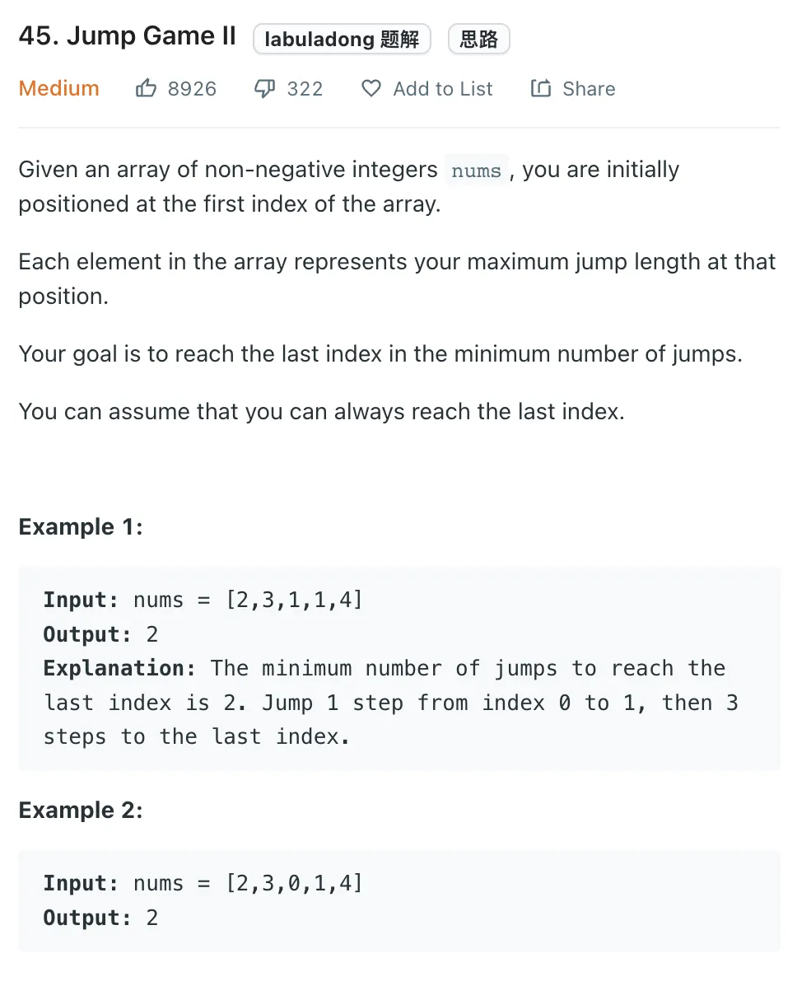
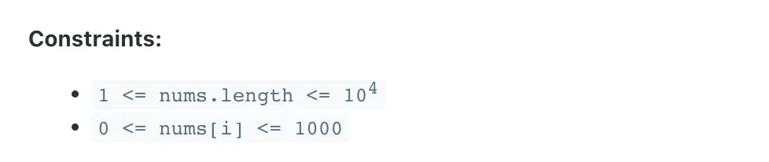

45. Jump Game II
考過的公司：Amazon、Google、tiktok
Question


✍🏽 My Solution
Solution #1 [DP]
Runtime: 394 ms, faster than 6.98% of Java online submissions for Jump Game II. Memory Usage: 49.8 MB, less than 25.73% of Java online submissions for Jump Game II.
class Solution {
public int jump(int[] nums) {
int n = nums.length;
int[] dp = new int[n];
dp[0] = 0;
for (int i = 1; i < n; i++) {
dp[i] = 100000;
for (int j = 0; j< i; j++) {
if (i-j <= nums[j]) {
dp[i] = Math.min(dp[i], dp[j] + 1);
}
}
}
return dp[n-1];
}
}
Explanation (in my words)
- How does their solution work?
- 很像最长子序列，同样采用一维dp
- 狀態表示：到達 i 的最少步數，f(i) = f(j)+1;
- What is the space/time complexity of their solution?
- time: O(n^2)
- space: O(n)
Solution #2 [Greedy]
https://blog.justin0u0.com/LeetCode-Jump-Game-II/
class Solution {
public int jump(int[] nums) {
int n = nums.length;
int steps = 0;
int iL = 0, iR = 0;
// iR >= n - 1，代表已經可以走到最後一格
while (iR < n - 1) {
int next_iR = 0;
for (int i = iL; i <= iR; i++) { // 從 [iL, iR] 出發找下一步的範圍
next_iR = Math.max(next_iR, i + nums[i]);
}
iL = iR + 1; // 下一個 iL
iR = next_iR; // 下一個 iR
steps++;
}
return steps;
}
}
Explanation (in my words)
- How does their solution work?
- LeetCode 45 - Jump Game II
- 用 i 遍歷整個數組，將每次遍歷到的數，在下一個可以跳的步數中可以跳最遠的
- 这里要注意一个细节，就是 for 循环中，i < nums.length - 1，少了末尾。因为开始的时候边界是第 0 个位置，steps 已经加 1 了。如下图，如果最后一步刚好跳到了末尾，此时 steps 其实不用加 1 了。如果是 i < nums.length，i 遍历到最后的时候，会进入 if 语句中，steps 会多加 1 。
- What is the space/time complexity of their solution?
- time:O(n)
- space:O(1)